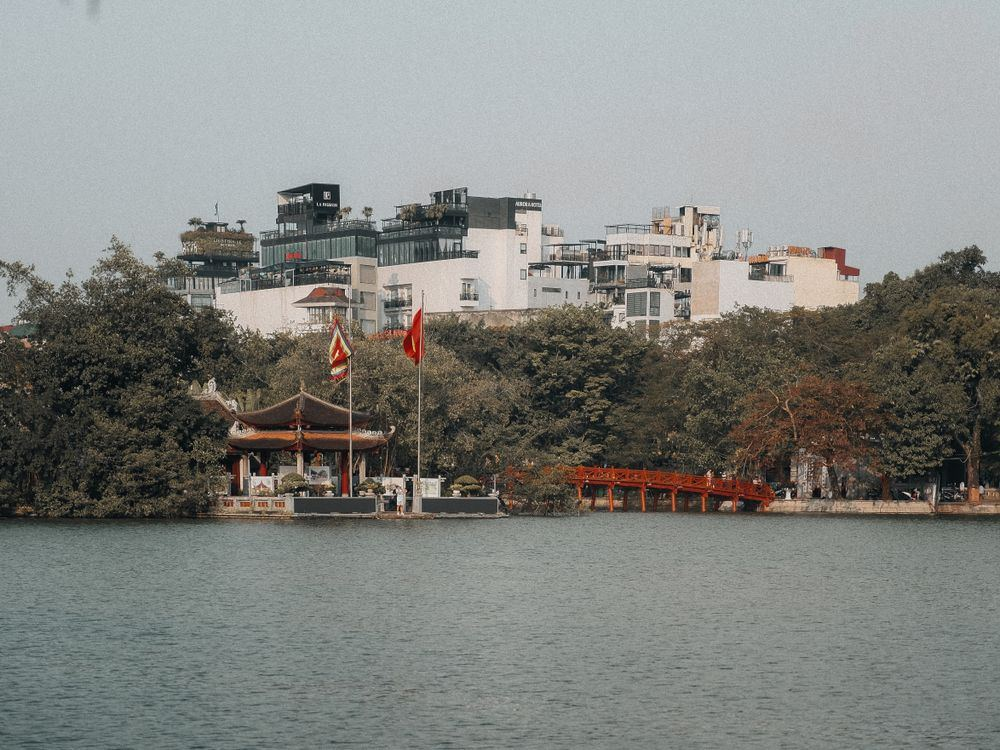
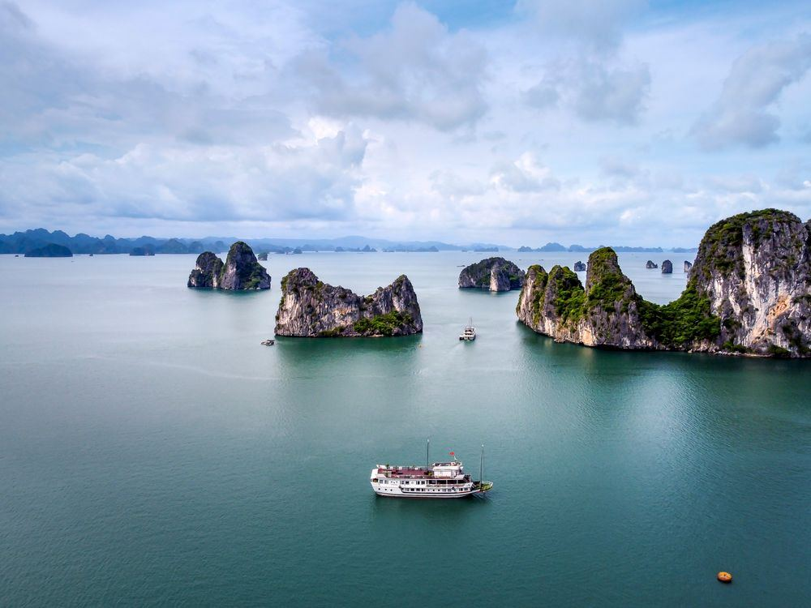
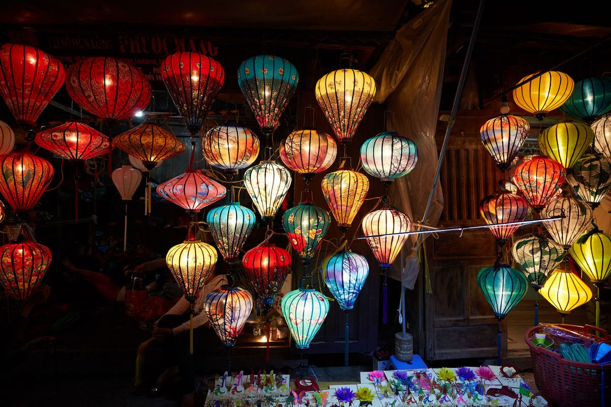
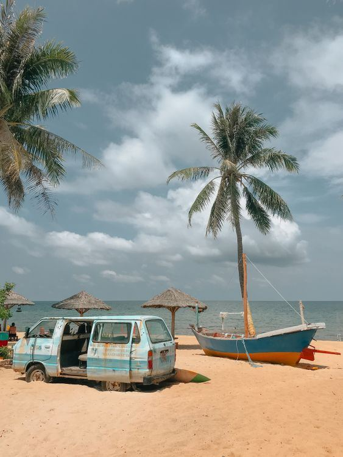

Hanoi
Vietnam's capital — a thousand years old, a little chaotic, and completely itself. Old Quarter street food, Train Street, egg coffee.
Travel Vietnam like a local — real prices, local tips & honest guides. Every price checked in November 2026.


Vietnam's capital — a thousand years old, a little chaotic, and completely itself. Old Quarter street food, Train Street, egg coffee.
The postcard of Vietnam: nearly 2,000 limestone islands rising out of emerald water. Cruise guide, prices and Lan Ha Bay compared below.

Vietnam's prettiest town — yellow walls, wooden shophouses and hundreds of silk lanterns glowing every evening. Plus An Bang Beach.

Central coast city where the Han River meets the sea — My Khe Beach, Marble Mountains, Ba Na Hills and the Golden Bridge.

High in the Hoang Lien Son mountains — Fansipan, rice terraces and hill-tribe villages, 320 km from Hanoi.

Vietnam's largest island — white-sand beaches, fishing villages, jungle interior and some of the best sunsets in the country.
Same limestone seascape, different crowds, caves, beaches and price — plus a 3-question chooser and 2-day cruise prices.
Beach city or lantern town? Where to stay, what each does best, and how to split your days between the two.
Hanoi to Ho Chi Minh City in ten days — the route, the transport, the stays and the daily budget.
Routes built from the per-province 1, 2 and 3-day plans in each guide.
Hanoi, Ha Long Bay and Ninh Binh in three days.
Hanoi, Ha Long Bay and Ninh Binh at a relaxed pace.
Hanoi and the north, then Hoi An and Da Nang.
The north, Hue, Hoi An and Da Nang.
North to south: Hanoi to Phu Quoc.
Detailed visa, money, safety and transport guides launch with the full site.
Our free Vietnam starter guide and new destination guides, once a week. The email list opens with the full site launch — bookmark this page and check back soon.